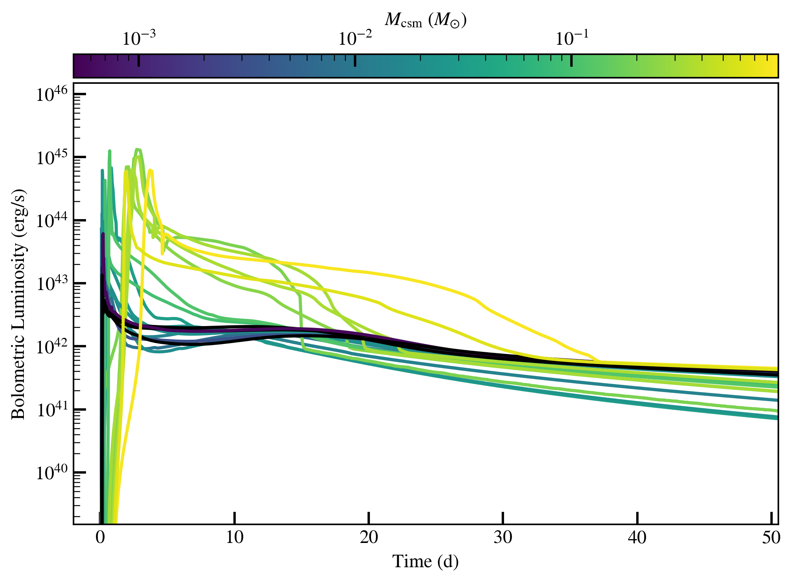
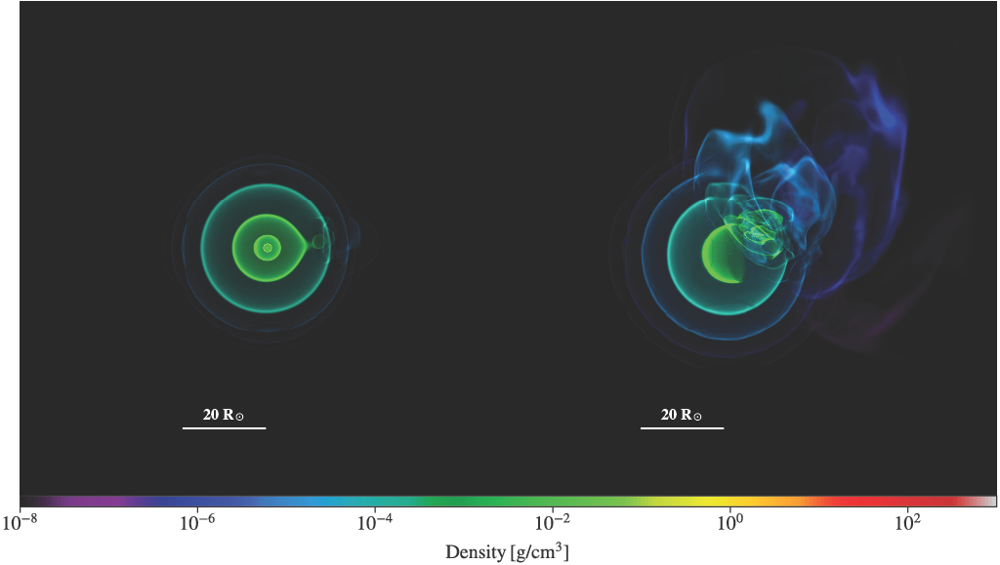
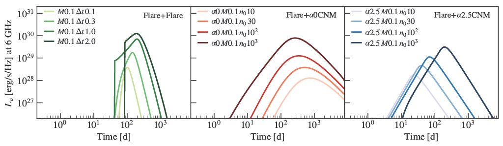

About Me
Hello! My name is Samantha Wu and I am a CIERA Postdoctoral Fellow, based at Northwestern University in Evanston.
Previously I was a Carnegie Theoretical Astrophysics Center Fellow at Carnegie Observatories in Pasadena.
I work on theoretical stellar and high-energy astrophysics,
using numerical calculations to study the interiors of stars and the explosive transient events
that occur when stars interact dynamically with their companions or surroundings.
I also think about stellar oscillations, convection, and tides.
I completed my Ph.D. in Astrophysics at Caltech in May 2024 and I earned bachelor's degrees in Applied Mathematics and Astrophysics at UC Berkeley in 2018.
Between graduating from Berkeley and starting at Caltech, I worked with Professor Enrico Ramirez-Ruiz's group at UC Santa Cruz during my gap year.
Research
Publications: on ADS
Interacting supernovae: Stars over 10 times the mass of our sun end their lives in core-collapse supernovae,
which astronomers see as bright flashes of light in the sky that typically last for months.
Some of these supernovae look different than expected, perhaps rising rapidly to an unusually bright peak
or exhibiting narrow emission lines in early spectra.
These unusual features appear when the supernova shock runs into dense material
that was ejected by the star before it exploded.
I study the ways that stars can lose mass in the weeks to millenia before they explode and
how this ejected circumstellar material (CSM) affects the light we see from the supernova.

Many supernova progenitors come from binary systems, where they can be stripped of their hydrogen envelopes. As a result,
they may explode as stripped stars with helium-rich envelopes at core collapse. The above figure shows
bolometric light curves of the core-collapse supernova explosion from stripped stars surrounded by different
amounts of circumstellar material (CSM). The mass of the CSM is indicated in the colorbar.
Interacting binary systems: Most massive stars live in binary systems, and a large fraction will interact with
their binary companion during their lifetime. Much of my work studies the evolution of such binary stars as they
strip mass from their companions, spiral into their companion envelopes, and potentially merge with their companion.
These interactions are crucial to understanding a variety of multi-messenger astrophysical sources,
including luminous red novae, interacting supernovae, and compact object mergers.
In my research, I have studied how binary interactions influence stars and their supernovae,
leading to rejuvenated stars, interacting and radio bright supernovae, and tight compact object binaries
that are likely progenitors of gravitational wave sources.

A 3D rendering of the result of a merger between two massive stars into a single star, with the left panel
showing an early phase of the simulation and the right panel showing a later snapshot.
The color indicates the density of the material. The envelope of the primary star is disturbed by the inspiraling
secondary star during the merger.
Tidal disruption events: At its center, our Milky Way galaxy hosts a supermassive black hole (SMBH) that
is millions of times more massive than our sun. Astronomers can see other SMBHs in galaxies across the universe
when they are illuminated by gas processes around the black hole. For instance, unlucky stars
that pass too close to the SMBH can be ripped apart by tidal forces, producing bright flares of light called
tidal disruption events. Observations of these exciting transients in multiple wavelengths provide a window
into the accretion processes that drive black hole growth, as well as probe the stellar populations in galactic nuclei.
I have worked on the processes and signatures of accretion in tidal disruption events, as well as
modeling the appearance of partially disrupted remnants of tidal disruption events that populate the Galactic center.

Radio light curves of the emission produced when outflows from a tidal disruption event accretion disk collide. Three scenarios are shown,
considering outflows colliding with each other as well as outflows that collide with different assumed density profiles of the
circumnuclear medium surrounding the supermassive black hole. Similar radio emission has been increasingly detected from tidal disruption events,
highlighting energetic processes occurring in the vicinity of the black hole.
Contact
Email: samantha.wu@northwestern.edu